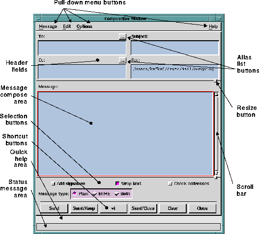

The Composition window is made up of these
components:
- Main menu bar containing four pull-down menus. These
menus enable you to create and modify messages,
customize your Composition window environment, and
get help on Composition window functions.
- Text fields for entering the message subject line,
addresses of message recipients, and additional headers.
- Composition field for entering the text of your message.
- Selection buttons, including.
- Add signature
- Wrap text
- Check addresses
- Set Message type
- Optional shortcut buttons.
The figure
Elements of the Composition Window illustrates the
primary elements of the Composition window.
See
Elements of the Comment on Application Window for
information about composing messages to H&L Technical
Support.

Preceding Section: Composition Window
Following Section: Window Operations
Parent Section: Composition Window
Contents of Ishmail User's Guide